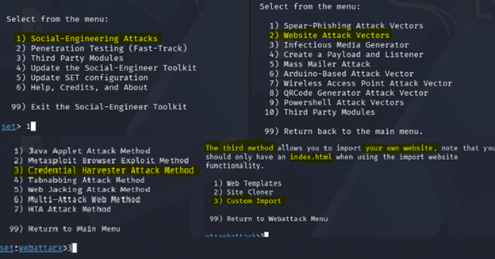
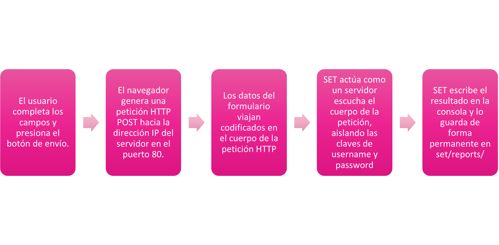

Una página demasiado convincente
Introducción
En el ámbito de la ciberseguridad, la ingeniería social representa una de las amenazas más efectivas al explotar el factor humano mediante el engaño y la manipulación. La presente actividad práctica tiene como propósito implementar y analizar un escenario controlado de phishing utilizando el módulo Credential Harvester de Social-Engineer Toolkit (SET) en Kali Linux.
Objetivo
Implementar y analizar, en un entorno de laboratorio controlado, una simulación de ingeniería social mediante Social-Engineer Toolkit (SET), utilizando una página web ficticia para comprender el funcionamiento de una técnica de captura de información y reconocer los elementos que permiten identificar un intento de phishing.
Descripción del escenario
Panadería My Melody es una franquicia multinacional con infraestructura tecnológica centralizada. El área de seguridad identificó una campaña activa de suplantación de identidad (phishing) donde atacantes envían mensajes falsos indicando: "Su sesión ha expirado. Inicie sesión nuevamente para continuar."
El enlace redirige a los empleados a un portal ficticio que suplanta la identidad visual de la empresa y recolecta credenciales mediante Credential Harvesting a través de Social-Engineer Toolkit (SET).
La captura de contraseñas y usuarios representa un riesgo de nivel alto/critico ya que una vez dentro de la red interna, el atacante puede escalar privilegios, identificar vulnerabilidades, desplegar un programa maligno y paralizar las operaciones de las tiendas, pueden reutilizar las contraseñas si algunos empleados las reutilizan en otros portales. Con todo esto la reputación de la empresa seria dañada e incluso provocando pérdidas millonarias.
Configuración del laboratorio
- Sistema Operativo: Kali Linux
- Herramientas: Social-Engineer Toolkit (SET), Mozilla Firefox
- Archivos del sitio:
index.html(Portal ficticio de Panadería My Melody) - Direccionamiento IP del atacante/servidor:
10.0.2.15
Código HTML del portal ficticio
Estructura básica del portal clonado creado en Kali Linux utilizando el editor nano para la captura de credenciales :
<!DOCTYPE html>
<html lang="es">
<head>
<meta charset="UTF-8">
<meta name="viewport" content="width=device-width, initial-scale=1.0">
<title>Panaderia My Melody - Iniciar sesión</title>
<style>
* {
box-sizing: border-box;
margin: 0;
padding: 0;
}
body {
background-color: #fde2e2;
display: flex;
justify-content: center;
align-items: center;
min-height: 100vh;
}
.login-card {
background-color: #ffffff;
width: 380px;
padding: 30px 25px;
border-radius: 12px;
border: 2px solid #ffb6c1;
box-shadow: 0 4px 15px rgba(0, 0, 0, 0.05);
text-align: center;
}
.logo-img {
width: 90px;
height: 90px;
border-radius: 50%;
object-fit: cover;
margin-bottom: 12px;
}
.logo-text {
font-size: 20px;
font-weight: bold;
color: #d8527a;
margin-bottom: 15px;
}
.alert-message {
background-color: #fff0f3;
color: #d8527a;
padding: 10px 12px;
border-radius: 8px;
font-size: 11px;
margin-bottom: 20px;
border: 1px dashed #ffc0cb;
}
.form-group {
margin-bottom: 15px;
text-align: left;
}
.form-group label {
display: block;
margin-bottom: 6px;
font-size: 13px;
color: #b05c75;
font-weight: bold;
}
.form-group input {
width: 100%;
padding: 10px 12px;
background-color: #fffdf5;
border: 1.5px solid #d8527a;
border-radius: 8px;
font-size: 14px;
outline: none;
color: #333;
}
.form-group input:focus {
box-shadow: 0 0 5px rgba(216, 82, 122, 0.4);
}
.btn-submit {
width: 100%;
padding: 12px;
background-color: #ffaa99;
border: none;
border-radius: 8px;
color: white;
font-size: 13px;
font-weight: bold;
cursor: pointer;
margin-top: 10px;
transition: background 0.3s;
}
.btn-submit:hover {
background-color: #f89684;
}
</style>
</head>
<body>
<div class="login-card">
<img src="https://i.pinimg.com/736x/9e/64/28/9e6428bde937208ce1fd56981e3728a4.jpg" alt="Logo de Panaderia My Melody" class="logo-img">
<div class="logo-text">Panadería My Melody</div>
<div class="alert-message">
Su sesión ha expirado. Inicie sesión nuevamente para continuar.
</div>
<form action="" method="POST">
<div class="form-group">
<label for="username">Usuario:</label>
<input type="text" id="username" name="username" required>
</div>
<div class="form-group">
<label for="password">Password:</label>
<input type="password" id="password" name="password" required>
</div>
<button type="submit" class="btn-submit">Iniciar sesión</button>
</form>
</div>
</body>
</html>
Evidencias y descripción del funcionamiento


http://10.0.2.15/).

/root/.set/reports/.Flujo del ataque
El flujo del ataque de phishing mediante SET se puede resumir en los siguientes pasos:

Controles de seguridad y mitigación
Para contrarrestar campañas de phishing y la captura de credenciales por servidores de suplantación, se proponen las siguientes medidas defensivas:
- Autenticación Multifactor (MFA FIDO2 / WebAuthn): El uso de llaves físicas de seguridad inmuniza contra portales clonados, ya que la llave valida el nombre de dominio legítimo antes de firmar.
- Filtros de correo y autenticación (SPF, DKIM, DMARC): Bloquean el vector de entrada impidiendo que los correos suplantados lleguen a la bandeja de entrada.
- Gestores de contraseñas corporativos: Los gestores no autocompletan datos si la URL en la barra de direcciones no coincide exactamente con el dominio registrado.
- Capacitación y concientización: Entrenamiento continuo a empleados para detectar incoherencias estéticas, uso de direcciones IP directas y falta de certificados TLS.
- Inspección de TLS y filtros de ULRs en Gateway:Bloqueo perimetral de dominios no categorizados o IPs directas, impide que las estaciones de trabajo locales establezcan conexiones hacia servidores maliciosos
Documentación de la práctica (PDF)
Puedes consultar el reporte completo de la práctica directamente a continuación o descargarlo en tu dispositivo:
Conclusión
La ejecución de este laboratorio demostró lo accesible que resulta replicar interfaces corporativas para interceptar credenciales en texto plano sin necesidad de vulnerar servidores ni descifrar algoritmos de cifrado. Se constató que la seguridad de una organización no puede depender únicamente del criterio visual del usuario para detectar fraudes, ya que el engaño explota directamente la confianza y la urgencia. En consecuencia, resulta indispensable implementar un esquema de defensa en profundidad que combine la concientización continua del personal con controles técnicos avanzados, tales como la autenticación multifactor (MFA) resistente a phishing y el uso estricto de protocolos cifrados (HTTPS/TLS).